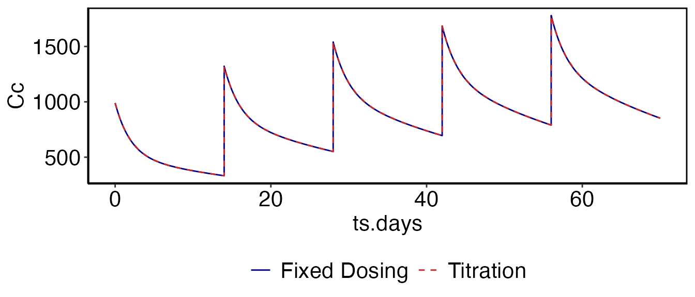

Introduction
In the Simulation vignette several examples are provided using fixed dosing regimens. This works well for compounds that are relatively safe, the PK is consistent over time, and for which the drug concentrations required to achieve efficacy are consistent. In fact these restrictions apply to many different compounds. However, there are many scenarios where it is necessary to adjust dosing based on periodic clinical visits: compounds with a narrow therapeutic index, disease progression which alters the drug PK or requires increases in the dose amount, etc. While it is possible to do this manually with the current simulation tools provided, this section outlines a generalized framework to make this easier for the users. The workshop provides several examples of running titration or rule-based simulations. To make a copy of these scripts and other supporting files in the current working directory run the following:
library(ubiquity)
fr = workshop_fetch(section="Titration", overwrite=TRUE)This should provide you with the following scripts:
-
analysis_repeat_dosing.r- Implement fixed bolus dosing using the titration framework -
analysis_repeat_infusion.r- Implement fixed infusion rates using the titration framework -
analysis_visit_dosing_titration.r- Alter dosing based on predictions at specified time points (individual) -
analysis_visit_dosing_titration_stochastic.r- Alter dosing based on predictions at specified time points (population) -
analysis_state_reset.r- Combine multiple rules to dose the drug and perform a state reset
Titration or rule-based simulations are run using the following functions:
-
system_new_tt_rule()- Defines a new rule and the times when it is evaluated -
system_set_tt_cond()- Adds a condition to a rule and an associated action to perform when that condition is true -
run_simulation_titrate()- Runs an individual simulation using titration rules
Repeated Bolus Dosing (analysis_repeat_dosing.r)
This example shows how to implement a dosing regimen using both the fixed-dosing methodologies and the titration functions above. This is meant as a means to bridge these two concepts. First we use the same model from the Simulation vignette (Davda etal. mAbs, 6(4), 1094-1102), and simulate five doses of 500 mg IV given every two weeks:
cfg = build_system()
cfg = system_select_set(cfg, "default")
parameters = system_fetch_parameters(cfg)
cfg=system_set_option(cfg,group = "simulation", option = "solver", value = "lsoda")
cfg=system_set_option(cfg, group = "simulation", option = "output_times", seq(0,10*7,1))
cfg = system_zero_inputs(cfg)
cfg = system_set_bolus(cfg, state = "Cc",
times = c(0, 14, 28, 42, 56),
values = c(500, 500, 500, 500, 500))
som_fix = run_simulation_ubiquity(parameters, cfg)To use rule-based control of the simulation we have to enable the titration option:
cfg=system_set_option(cfg,
group = "titration",
option = "titrate",
value = TRUE)Next we need to define a rule using
system_new_tt_rule(). A rule contains a set of times (and
the timescale) where we want to evaluate that rule. Here we create a
rule called "ivdose" and we evaluate this rule at weeks 0,
2, 4, 6 and 8. Any timescale defined using <TS:?> in
the system file can be used:
cfg=system_new_tt_rule(cfg,
name = "ivdose",
times = c(0, 2, 4, 6, 8),
timescale = "weeks")Once a rule has been created you can attach conditions to that rule
using system_set_tt_cond(). The name passed to this
function is the name of the rule to which this condition applies. The
cond argument is a string that will be evaluated
internally. You put any kind of Boolean argument you want here, or even
create a user definable function that returns a Boolean argument (eg,
'myfunction(arguments)'). When this condition evaluates as
true the string in action will be evaluated. The string
SI_TT_BOLUS is a prototype function used to modify dosing
at the titration points. See the help (?system_set_tt_cond)
for details on prototype functions and the variables available in the
titration environment. This action will define the dosing into the
specified state (as defined by <B:?> in the system
file) with the values and times shown. The units here are those
specified in the system file and the times are relative to the titration
time point.
cfg=system_set_tt_cond(cfg,
name = "ivdose",
cond = "TRUE",
action = "SI_TT_BOLUS[state='Cc', values=500, times=0]",
value = "1")Next we simulate the system using the titration function:
som_tt = run_simulation_titrate(parameters, cfg)Now we can overlay the predictions using both methods to show that they produce the same result:
myfig = ggplot() +
geom_line(data=som_fix$simout, aes(x=ts.days, y=Cc, color="Fixed Dosing"), linetype=1) +
geom_line(data=som_tt$simout, aes(x=ts.days, y=Cc, color="Titration" ), linetype=2) +
scale_colour_manual(values=c("Fixed Dosing"="darkblue", "Titration"="firebrick3")) +
theme(legend.title = element_blank()) +
theme(legend.position = 'bottom')
myfig = prepare_figure('present', myfig)
print(myfig)
The output of run_simulation_titrate() is similar to
that of run_simulation_ubiquity() with two extra elements
in the list that is returned:
-
titration- A data frame with a row for each time course output and the following columns for titration ruletname:-
tt.tname.value- Value of the rule for the active condition or -1 if not triggered -
tt.tname.simtime- Simulation time where the last condition became active -
tt.tname.timescale- Simulation time in the time scale the rule was specified in Each of these fields is
-
-
titration_historydata frame which contains a summary list of all of the titration events that were triggered.-
tname- Titration rule name -
value- Value of the rule for the active condition -
simtime- Simulation time where the last condition became active -
timescale- Simulation time in the time scale the rule was specified in
-
Repeated Infusions (analysis_repeat_infusion.r)
In this example we want to give a 30 minute infusion at 15 mg/min every two weeks. Similar to the previous example we first do this using the fixed dosing methods:
cfg = system_zero_inputs(cfg)
cfg = system_set_rate(cfg, rate = "Dinf",
times = c( 0, 30, 20160, 20190, 40320, 40350, 60480, 60510, 80640, 80670),
levels = c(15 , 0, 15, 0, 15, 0, 15, 0, 15, 0))
som_fix = run_simulation_ubiquity(parameters, cfg)Now to use the rule-based dosing we enable titration, create the rule
("ivdose") to hold the dosing times, and create the
conditions resulting in the dosing. This is all similar to the previous
example except we use the SI_TT_RATE prototype function.
The rate and the units of times and levels are the same as those
specified in the system file (<R:?>). The times here
are also relative to the titration time.
cfg=system_set_option(cfg, group = "titration", option = "titrate", value = TRUE)
cfg=system_new_tt_rule(cfg, name = "ivdose", times = c(0, 2, 4, 6, 8), timescale = "weeks")
cfg=system_set_tt_cond(cfg,
name = "ivdose",
cond = "TRUE",
action = "SI_TT_RATE[rate='Dinf', times=c(0,30), levels=c(15,0)]",
value = "1")
som_tt = run_simulation_titrate(parameters, cfg)
myfig = ggplot() +
geom_line(data=som_fix$simout, aes(x=ts.days, y=Cc, color="Fixed Dosing"), linetype=1) +
geom_line(data=som_tt$simout, aes(x=ts.days, y=Cc, color="Titration" ), linetype=2) +
scale_colour_manual(values=c("Fixed Dosing"="darkblue", "Titration"="firebrick3")) +
theme(legend.title = element_blank()) +
theme(legend.position = 'bottom')
myfig = prepare_figure('present', myfig)
print(myfig)Titrated Dosing
(analysis_visit_dosing_titration.r)
In the following example we want to administer a subcutaneous dose
(into At) every two weeks (interval=14) for 12
weeks. The dose level will be evaluated every 6 months. If the serum
concentration (Cc) is less than 900, we will dose at 700 mg. If Cc it is
greater than 900 we dose at 600 mg. The relevant code to implement this
are shown below:
cfg=system_new_tt_rule(cfg,
name = "ivdose",
times = c(0, 6, 12, 18, 24),
timescale = "months")
cfg=system_set_tt_cond(cfg,
name = "ivdose",
cond = "Cc < 900",
action = "SI_TT_BOLUS[state='At', values=700, times=0, repdose='last', number=11, interval=14]",
value = "700")
cfg=system_set_tt_cond(cfg,
name = "ivdose",
cond = "Cc > 900",
action = "SI_TT_BOLUS[state='At', values=600, times=0, repdose='last', number=11, interval=14]",
value = "600")
som_tt = run_simulation_titrate(parameters, cfg)
myfig = ggplot() +
geom_line(data=som_tt$simout, aes(x=ts.weeks, y=Cc), color="blue")
myfig = prepare_figure('present', myfig)
print(myfig)Initially the concentration in the serum is 0
(Cc < 900), so dosing starts at 700. After six months
the titration rule is triggered again. At this point the serum
concentration is greater greater than 900 so the dose level is reduced
to 600. All subsequent measurements are greater than 900 so the dose
remains at 600.
Titration output: som_tt$titration
Titration output: som_tt$titration_history
Monte Carlo Simulations
(analysis_visit_dosing_titration_stochastic.r)
This example is similar to the last except here we are performing
population simulations (20 subjects). The same function
(simulate_subjects()) is used but setting the
'titrate' option to TRUE tells that function
to use the rule-based dosing.
cfg = system_set_option(cfg, group="stochastic", option="nsub", value=20)
som= simulate_subjects(parameters, cfg)This will add a data a list element called som$titration
with three fields for each titration rule (tname):
-
tt.tname.value- Value of the rule for the active condition -
tt.tname.simtime- Simulation time where the last condition became active -
tt.tname.timescale- Simulation time in the time scale the rule was specified in
Each of these fields is a matrix with an entry for each simulation time (column) and each subject (row). In this example these would be accessed through the following list elements:
som$titration$tt.ivdose.simtime-
som$titration$tt.ivdose.value
som$titration$tt.ivdose.timescaletimescale
This data structure (som) can be collapsed down to a
data frame using the som_to_df function. With titration
simulations a column is added for each rule giving the value of that
rule at the indicated time (the first 100 rows are shown):
sdf = som_to_df(cfg, som)Performing State/Compartment Resets
(analysis_state_reset.r)
Along with changing dosing at titration time points, it may also be necessary to directly alter state or compartment values. In this last example we will dose every two weeks and on week 3 we will drop the total drug in the system by 1/2.
This portion covers the IV dosing component:
cfg=system_new_tt_rule(cfg,
name = "ivdose",
times = c(0, 2, 4, 6, 8),
timescale = "weeks")
cfg=system_set_tt_cond(cfg,
name = "ivdose",
cond = 'TRUE',
action = "SI_TT_BOLUS[state='Cc', values=500, times=0]",
value = "5")And this portion reduces the amount of drug in both Cc
and Cp by 1/2 at week 3:
cfg=system_new_tt_rule(cfg,
name = "state_reset",
times = c(3),
timescale = "weeks")
cfg=system_set_tt_cond(cfg,
name = "state_reset",
cond = 'TRUE',
action = "SI_TT_STATE[Cc][0.5*Cc]",
value = "0")
cfg=system_set_tt_cond(cfg,
name = "state_reset",
cond = 'TRUE',
action = "SI_TT_STATE[Cp][0.5*Cp]",
value = "0")
som_tt = run_simulation_titrate(parameters, cfg)
myfig = ggplot() +
geom_line(data=som_tt$simout, aes(x=ts.weeks, y=Cc), color="red")
myfig = prepare_figure('present', myfig)
print(myfig)Contents of system.txt
# Implementation of the two compartment model from Davda 2014
#
# Davda, J. P., Dodds, M. G., Gibbs, M. A., Wisdom, W., & Gibbs, J. (2014). A
# model-based meta-analysis of monoclonal antibody pharmacokinetics to guide
# optimal first-in-human study design. mAbs, 6(4), 1094-1102.
# http://doi.org/10.4161/mabs.29095
#
# System Units:
# mass [=] nmoles
# volume [=] L
# concentration [=] nM
# time [=] day
#
# #-------------#
# | Parameters |
# #-------------#
# System parameters
#name value lower upper units editable grouping
# bound bound
<P> F1 0.744 eps inf --- yes System
<P> ka 0.282 eps inf 1/day yes System
<P> CL 0.200 eps inf L/day yes System
<P> Vc 3.61 eps inf L yes System
<P> Vp 2.75 eps inf L yes System
<P> Q 0.747 eps inf L/day yes System
<P> MW 140 eps inf kD yes System
<PSET:default> mAb in Humans
# Interindividual Variability
# Taken from Table 3
<IIV:ETAka> 0.416
<IIV:ETAka:LN> ka
<IIV:ETACL> 0.09875
<IIV:ETACL:LN> CL
<IIV:ETAVc> 0.116
<IIV:ETAVc:LN> Vc
<IIV:ETAVp> 0.0789
<IIV:ETAVp:LN> Vp
<IIV:ETAQ> 0.699
<IIV:ETAQ:LN> Q
<IIVCOR:ETACL:ETAVc> 0.0786
<IIVCOR:ETACL:ETAVp> 0.0619
<IIVCOR:ETAVp:ETAVc> 0.0377
# Covariates
<CV:DOSE> ; times; [ 0 ]; day
<CV:DOSE> ; values; [400]; mg
<CVINTERP:DOSE> step
<CV:WT> ; times; [ 0 ]; day
<CV:WT> ; values; [ 60]; kg
<CVINTERP:WT> step
# static secondary parameters
<As> kel = CL/Vc
<As> kcp = Q/Vc
<As> kpc = Q/Vp
# #-------------------#
# |Input Information |
# #-------------------#
#
# 1e6 ng 1 nmole 1
# X mg x ------ x ----------------- x --- => X*1e3/MW/Vc
# 1 mg MW (KDA) * 1000 V(L)
#
# Bolus Events
# times/events state values scale units
<B:times>; [ 0.0, 7, 14 ]; 1; days
<B:events>; At; [400.0, 0, 0 ]; 1e3/MW; mg
<B:events>; Cc; [ 0.0, 0, 0 ]; 1e3/MW/Vc; mg
<R:Dinf>; times; [0, 30]; 1/60/24; min
<R:Dinf>; levels; [0, 0]; 60*24*1e3/MW; mg/min
# ODEs
<ODE:At> -ka*At
<ODE:Cc> ka*At*F1/Vc -kel*Cc - kcp*Cc + kpc*Cp*Vp/Vc + Dinf/Vc
<ODE:Cp> kcp*Cc*Vc/Vp - kpc*Cp
# #---------#
# | Outputs |
# #---------#
# Outputs that begin with QC will not be displayed in the GUI
# Convert nM to ng/ml
#
# X nM ===> X*MW(KDA)
#
# Convert nM to ug/ml/mg(dose)
#
# X nM ===> X*MW(KDA)/1000/dose
#
<O> C_ng_ml = Cc*MW
<O> C_DOSE = Cc*MW/DOSE/1000
<VP> prop_err 0.1 eps inf -- yes Variance
<VP> add_err 0.1 eps inf ng/ml yes Variance
<EST:LT> Vp; Vc; CL; Q; ka
<EST:P> Vp; Vc; CL; Q; ka; add_err; prop_err
<OE:C_ng_ml> add=add_err; prop=prop_err
<AMTIFY> Cp; Ap; Vp
# #---------#
# | Options #
# #---------#
# General Options:
# specify different time scales
<TS:min> 24.0*60.0
<TS:days> 1.0
<TS:hours> 24.0
<TS:weeks> 1.0/7.0
<TS:months> 1.0/7.0/4.0